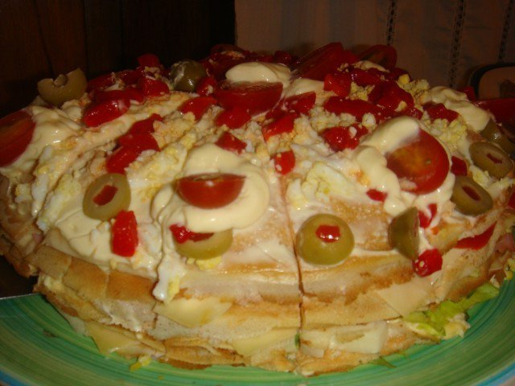

Fiambre Aleman

Torre fria de panqueques salada
Construida con pisos intercalados de fiambres, quesos, vegetales frescos y aderezos.
Ideal como entrada fria en nuestra cena navideña.
Ingredientes:
- Panqueques
- Jamon
- Queso
- Tomate
- Lechuga
- Huevos
- Mayonesa
Procedimiento:
- Colocar el primer panqueque en un plato y agregar mayonesa encima.
- Colocar los fiambres sobre el panqueque y agregar otro panqueque.
- Colocar mayonesa al panqueque y luego los vegetales.
- Repetir el proceso varias veces hasta terminar los panqueques.
- Decorar con huevo picado, morron y mayonesa.